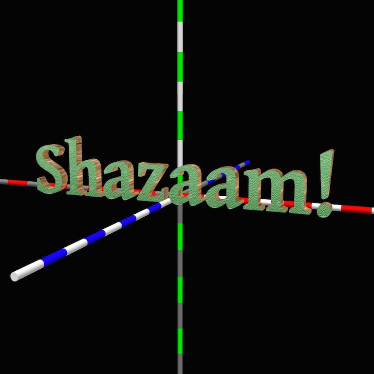
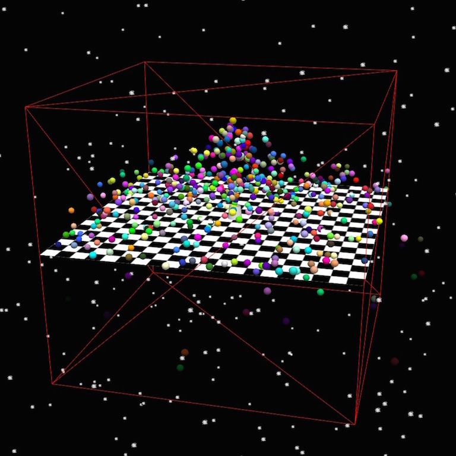
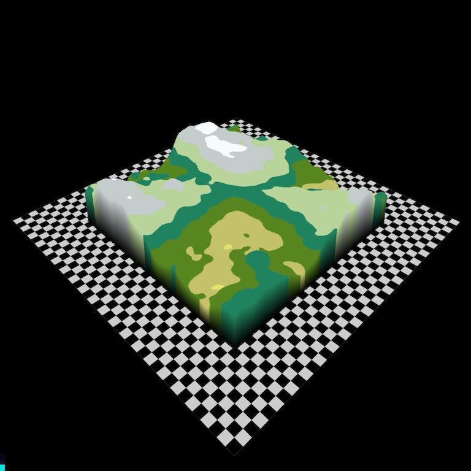

NeHe and Three.js
These pages are a set of lessons in using three.js and WebGL using the legacy NeHe demos. All the sources are available on github here.
|
Lessons 1-8 The first 8 lessons in the NeHe tutorials, covering set up, first animation, mapping textures onto objects basic filters and blending. |
|
|  |
Lessons 9-16 The next 8 lessons in the NeHe tutorials covering masking, parametric surfaces, text sprites, outline fonts and fog. |
|  |
Lessons 17-24 These lessons cover texture atlases. quadrics, masking, particle engines. bump mapping, orthographic projection and environmental reflections. |

|
Lessons 25-32 These lessons cover morphing shapes, mirror reflection, shadows, Bezier surfaces, collison detection, loading models and 3D picking. |
|  |
Lessons 33-40 These lessons cover height maps, movies in WebGL, radial blues, physical simulations and rope physics. |

|
Lessons 41-48 These lessons cover multiple viewports and lens flare anti-aliasing and more. |